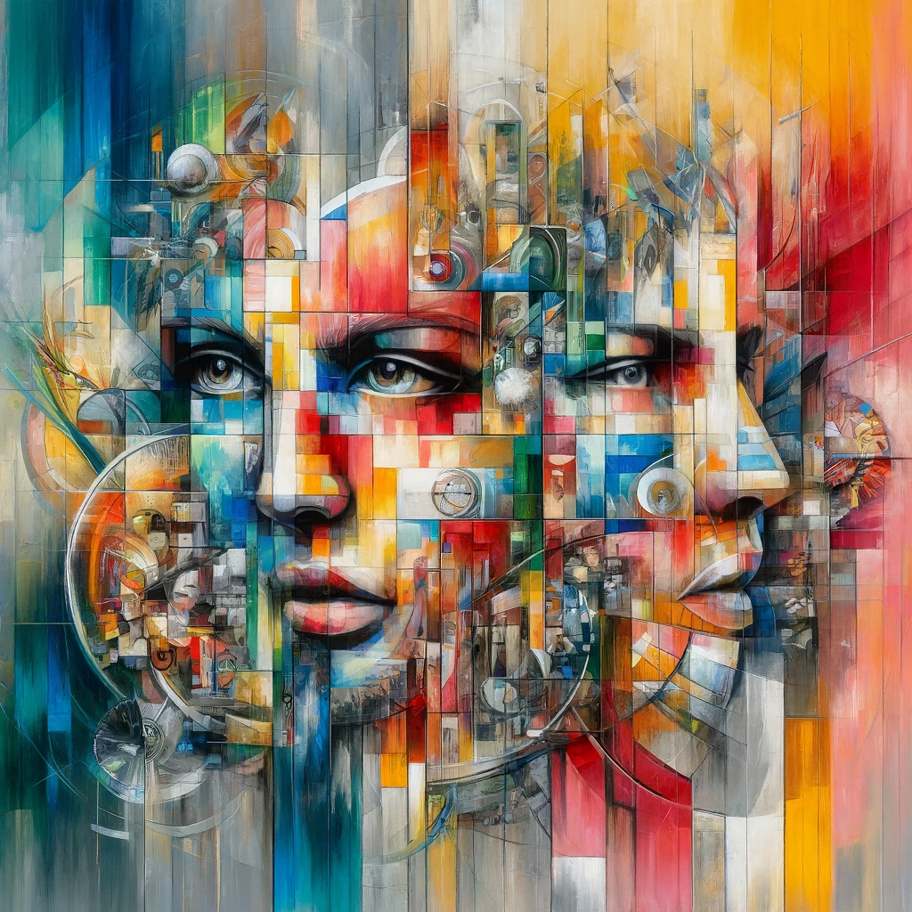
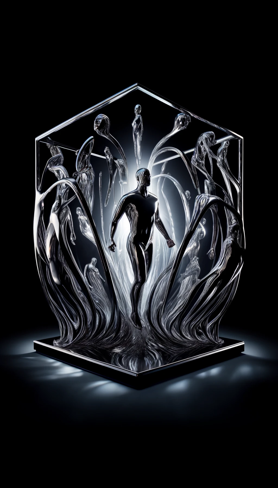
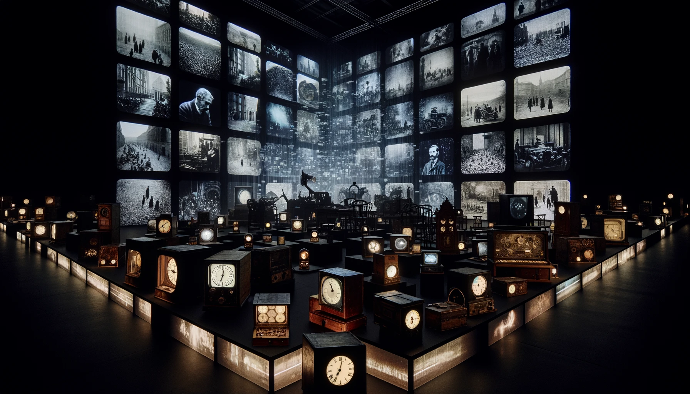
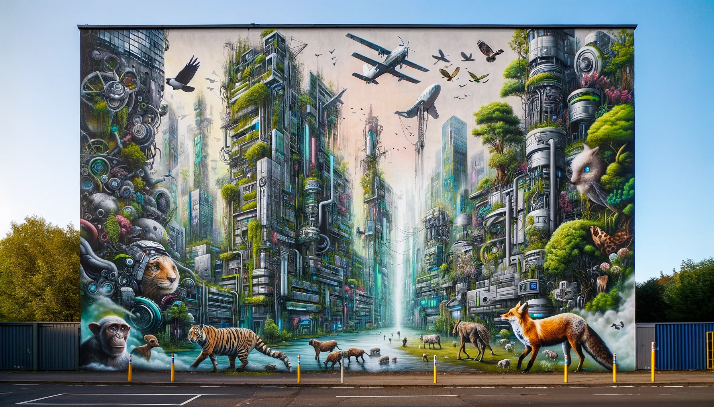

Nuevas obras en nuestro museo
"Fragmentos de Realidad" por Sofia Altamira
Una pintura abstracta que utiliza una combinación de colores brillantes y contrastantes. La obra representa fragmentos de rostros y objetos cotidianos, mezclados en una composición que parece estar en constante movimiento. El uso de texturas y capas crea una sensación de profundidad, invitando al espectador a explorar cada rincón del lienzo.
"Reflejos del Alma" por Marcus Delacroix
Una escultura hecha de metal pulido y vidrio, donde figuras humanas estilizadas parecen emerger de una base sólida. La luz se refleja en las superficies pulidas, creando patrones dinámicos que cambian según la perspectiva del espectador. La obra invita a la introspección, sugiriendo que la verdadera esencia de una persona es multifacética y cambiante.
"Ecos del Pasado" por Anika Petrov
Una instalación multimedia que combina video, sonido y objetos físicos. En una sala oscura, pantallas muestran imágenes históricas y contemporáneas superpuestas, mientras sonidos de épocas diferentes se mezclan en un eco constante. Objetos como relojes antiguos y dispositivos modernos están dispersos por la sala, creando una atmósfera que invita a reflexionar sobre la relación entre el tiempo y la memoria.
"Sueños en la Ciudad" por Li Wei
Un mural urbano que cubre una pared completa de un edificio, utilizando grafiti y técnicas de pintura mural. La obra representa una ciudad futurista donde la naturaleza y la tecnología coexisten en armonía. Animales y plantas se mezclan con estructuras tecnológicas, creando un paisaje onírico que desafía la percepción tradicional de la ciudad moderna.